Galaxy Morphology Classification Using CNN
Karen Loscocco, Yunqing (J.J.) Jia, Ammar Qaseem
This project is maintained by yjia67
Introduction
Motivation
The universe is approximately 13.8 billion years old, while the Earth has only been around for 4.54 billion years. As the universe continues to expand, questions remain about how galaxies formed and evolved. To solve this puzzle of the cosmic structure, understanding the distribution and types of galaxies as a function of their shapes and sizes is crucial. As the technology, specifically telescopes, for capturing such phenomena and returning images to scientists on Earth, improves, the dataset increases exponentially. Traditionally, galaxy identifications were achieved by crowdsourcing. However, as the datasets grow to the scale of hundreds of millions of galaxies, manual identification becomes less feasible. This project aims to analyze photos of galaxies and to train an algorithm that generates automated metrics and classifies them into two different classes, spiral and elliptical.
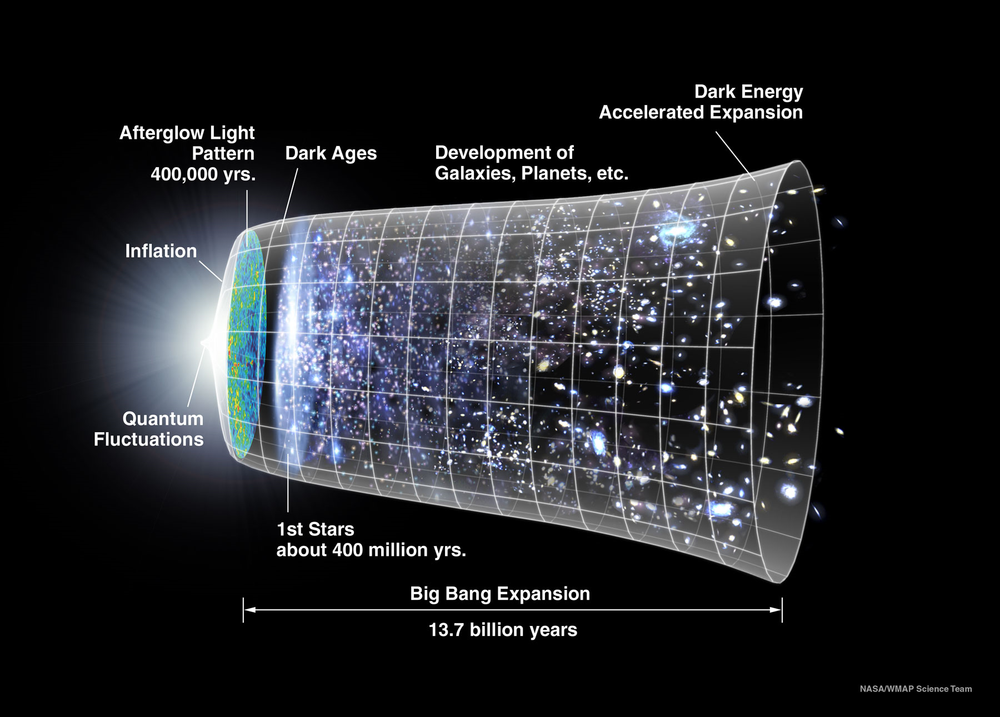
Figure 1. Timeline of the Cosmos
Problem Definition & Project Scope
Given an already classified set of images, and the problem we are trying to solve is mapping JPEG images into two different categories. Since we are dealing with image data, the most obvious machine learning method to use was convolutional neural networks (CNN). However, this method does have its drawbacks, the most notorious one being the problem of overfitting, which is inevitable with the large number of parameters generated in the neural network. Dimensionality reduction methods such as principal component analysis (PCA) can be used to counteract such effects, and other machine learning methods such as ridge regression and random forest can be used to generate a baseline for us to evaluate our model’s performance. The data preprocessing and the different approaches are documented in detail in the Methodology section.
Methodology
Image Preprocessing
The dataset, acquired from this Kaggle competition, includes 61,578 JPG images that are 424x424 pixels in size, as well as their probability distribution assignments based on 37 crowdsourced classifications.
By examining the dataset, most images had a large amount of black margins around the area of interest. Because of this, we decided to crop all images to 100x100 pixels and converted them to grayscale to reduce the computational cost.
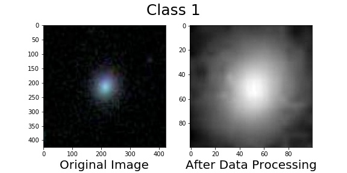
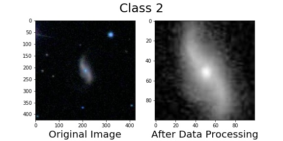
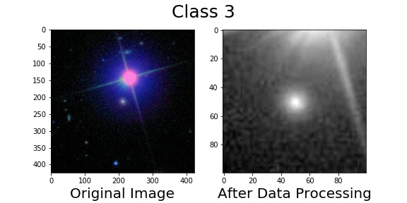
Figure 2. Original -> Cropped, Grayscale Images
The original 37 class probability assignments were based on the decision tree, which was comprised of 11 classification tasks, shown in Figure 3. All classes but those from the first task of the decision tree were composite probabilities, for the purpose of emphasizing the high-level, large-scale morphology categories.
We encountered difficulties enforcing composite constraints on the output layer of our algorithms, thus, we modified our objective by focusing on only the first task of the decision tree, which is composed of 3 classes, spiral, elliptical, and merging galaxies. The results from our algorithms build a foundation for future expansion of the objective.
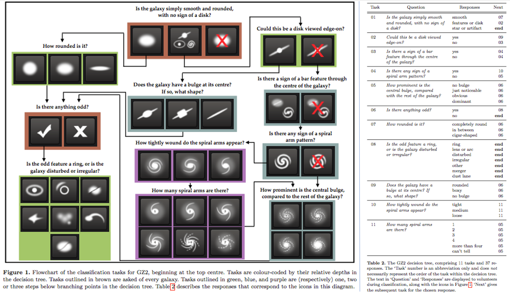
Figure 3. Decision Tree & Decision Tasks
We then analyzed the distribution of probability assignments for the remaining 3 classes, and discovered that a large portion of data did not have a high confidence in one single category. We filtered out data points with a confidence below 0.8 and plotted a histogram (Figure 4). This procedure reduced our data set from 61,578 to 24,273 images.
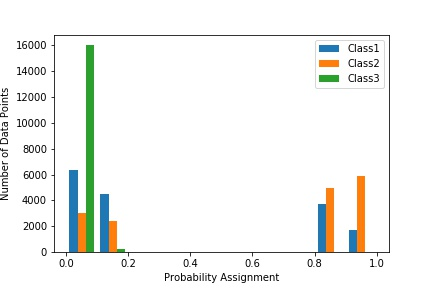
Figure 4. Histogram of Probability Distributions for 3 Classes
We also discovered that there are almost no sample with a highly confident assignment to the 3rd class. The 3rd class corresponded to merging galaxies, which are rare in this particular dataset. This led us to reduce our objective to a binary classification problem.
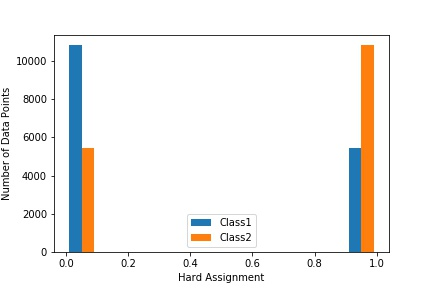
Figure 5. Histogram of Hard Assignment Distributions for 2 Classes
Dimensionality Reduction
We attempted to run machine learning algorithms on the preprocessed images, but the results were only marginally better than the accuracy of random guessing. The computational cost was also very high, which made it difficult for us to experiment with different models and tweak parameters. To combat this challenge, we reduced the dimension of our dataset using Principal Component Analysis (PCA). The processed image originally had 10,000 components (100x100 pixels). After performing PCA, each data entry was reduced to only 17 components, which covered 95% of the variance. We then used the feature weights generated from PCA to reconstruct images to the cropped size so we can pass them back into our ML models. Figure 6 shows images before and after PCA, and Figure 7 shows the principal components projected into three dimensions.
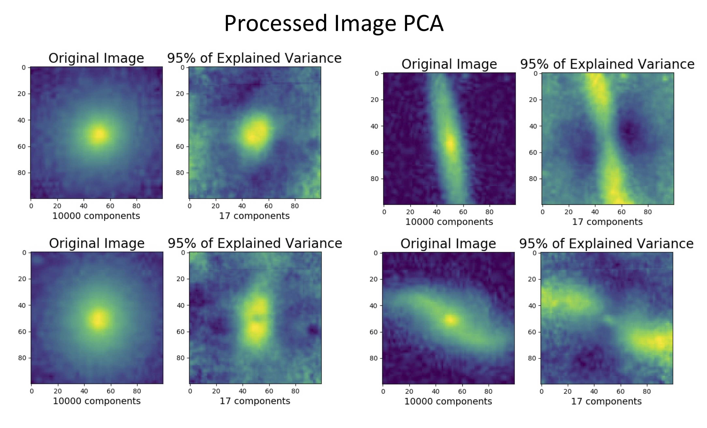
Figure 6. Preprocessed -> PCA Reconstructed Image
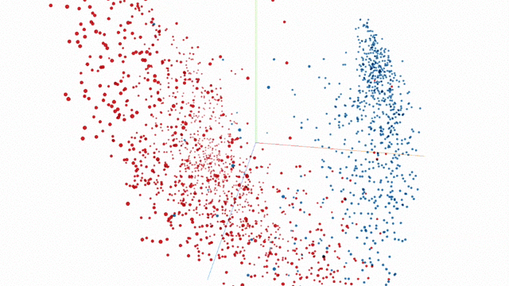
Figure 7. Tensorboard Projector - PCA
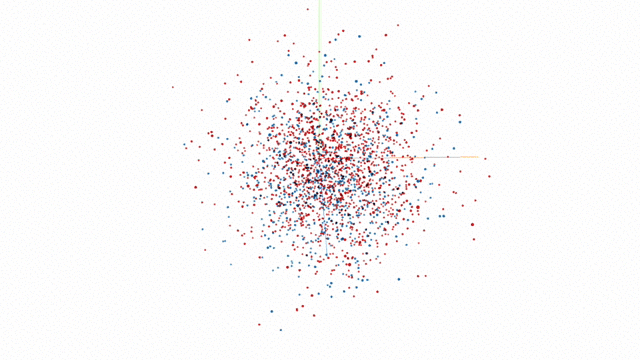
Figure 8. Tensorboard Projector - t-distributed Stochastic Neighbor Embedding
We also performed PCA on the original 424x424x3 images to validate that the preprocessed images preserved the most important features that best explained the variances in the data. An example of the resulting image is shown in Figure 8.

Figure 9. Full Size Image -> PCA Reconstructed Image
Sprinkle in Some Machine Learning
Benchmarks
To set a baseline for the performance of our CNN, we fitted the data using Logistic Regression, Ridge Regression, and Random Forest. The dataset was split into 21,845 training points and 2,428 testing points. For the logistics regression, we used 'liblinear' as our solver, and for the ridge regression, we set alpha to 100. The confusion matrices and the accuracy scores for all three models are shown in the following figure.
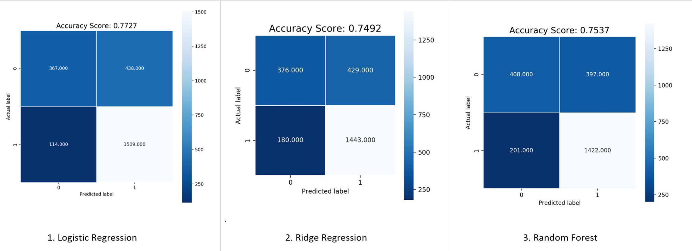
Figure 10. Confusion Matrices for the Baseline Models
Convolutional Neural Network (CNN)
The best model we found is a variation of a model that was used to train the MNIST dataset. We tweaked the sequence of layers and their parameters, the architecture of our final model is as follows:
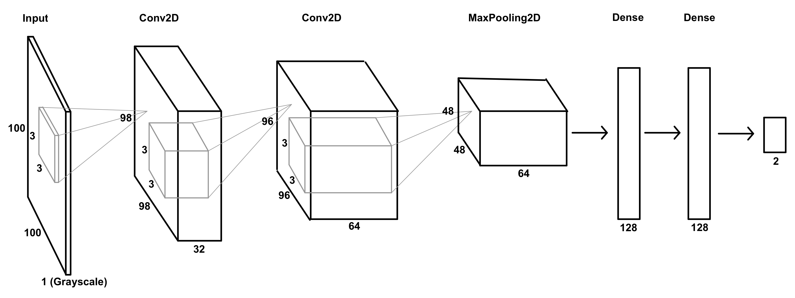
Figure 11. CNN Model Architecture
The input is presented to the model in the form of grayscale 100x100 image parts after dimensionality reduction (PCA).
The model had 5 layers, 2 convolutional layers and 2 dense layers. All convolutional layers included a ReLU activation to capture the nonlinearity (i.e. f(x) = max(x, 0)). The second convolutional layer is followed by 2x2 max-pooling. The number of nodes and the kernel size for each layer is labeled in Figure 12. We trained the CNN with ADADELTA as the optimizer, which is an adaptive learning rate method for gradient descent. We defined our loss function to be categorical cross-entropy, which works well with hard assignments. And for our evaluation metrics, we computed the mean absolute error and the accuracy value on our training and validation data.
Results
The model achieved high accuracy: 98.77% for training and 95.74% validation.
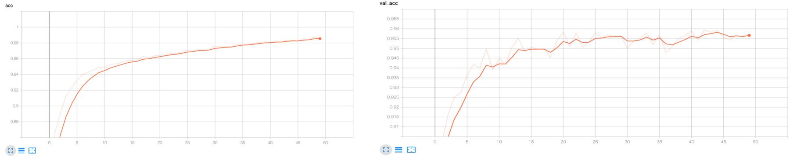
Figure 12. Training and Validation Accuracy over 50 Epochs
The mean absolute error and the accuracy value converged after 50 epochs.
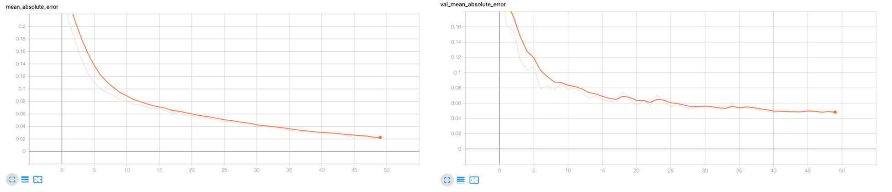
Figure 13. Training and Validation Mean Absolute Error over 50 Epochs
The validation loss started to increase again after about 15 epochs, which could be a sign of overfitting.
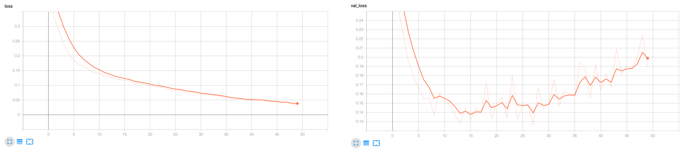
Figure 12. Training and Validation Loss over 50 Epochs
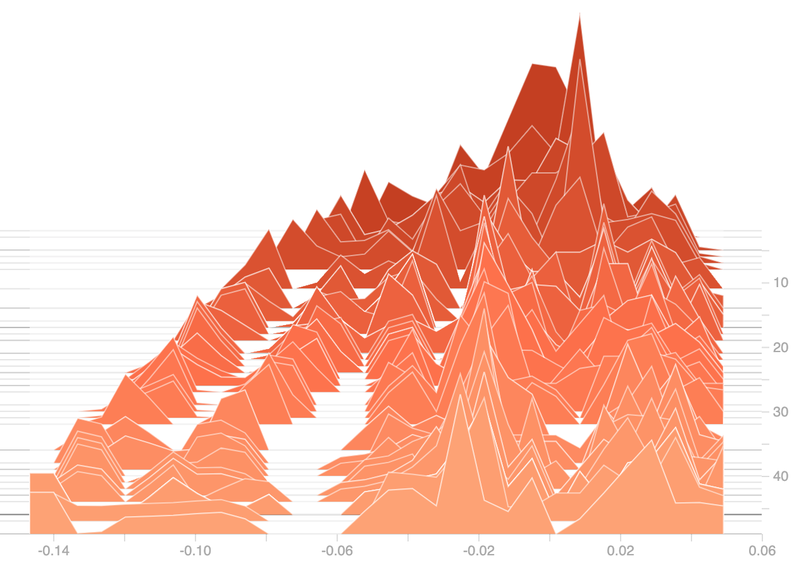
Figure 13. Weight Distribution Histogram over 50 Epochs
To be consistent with the evaluation metrics of our baseline models, we tested our model and obtained the following confusion matrix.
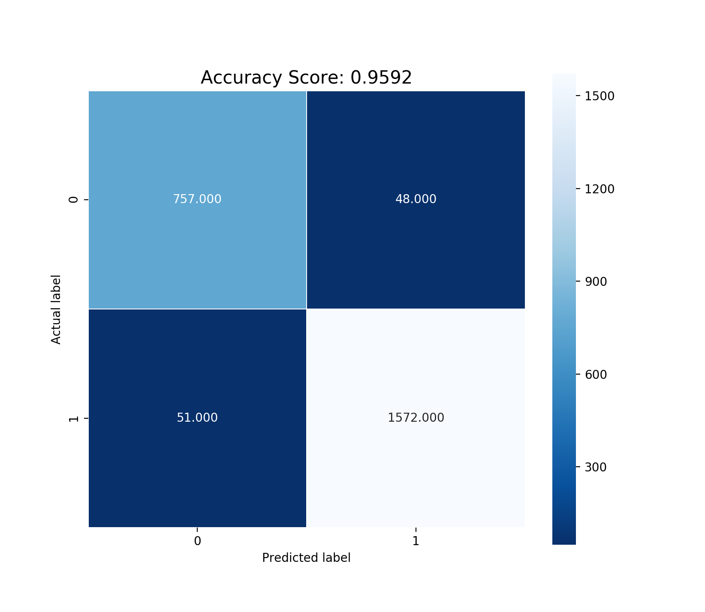
Figure 15. Confusion Matrix for CNN
Conclusion
The following figure lists the accuracy scores for all models generated in this project using various machine learning methods.
| Model | Testing Accuracy |
|---|---|
| Logistics Regression | 0.7727 |
| Ridge Regression | 0.7492 |
| Random Forest | 0.7537 |
| CNN | 0.9592 |
Figure 16. Comparison of Accuracy Scores for All Models
The trained Convolutional Neural Network yielded the highest testing accuracy score, 95.92%. CNN is once again proved to be a good machine learning method for processing image data.
Future Work
To further improve the machine learning model for this particular problem in the future, here are a few ideas one could pursue:
- Use feature extraction to train the model on selected features rather than all the pixels in one image
- Expand the problem to reproduce probability distribution for all 37 classes
- Exploiting the invariances in images by randomly rotating, scaling, translating, and reflecting them
References
-
[1] Alex Krizhevsky et al., 2012. “ImageNet Classification with Deep Convolutional Neural Networks”
-
[2] H. Domínguez Spánchez et al., 2019. “Transfer learning for galaxy morphology from one survey to another”
-
[3] Kyle W. Willett et al., 2013. “Galaxy Zoo 2: detailed morphological classifications for 304,122 galaxies from the Sloan Digital Sky Survey”
-
[4] Sander Dieleman, 2014. "My Solution for the Galaxy Zoo Challenge"